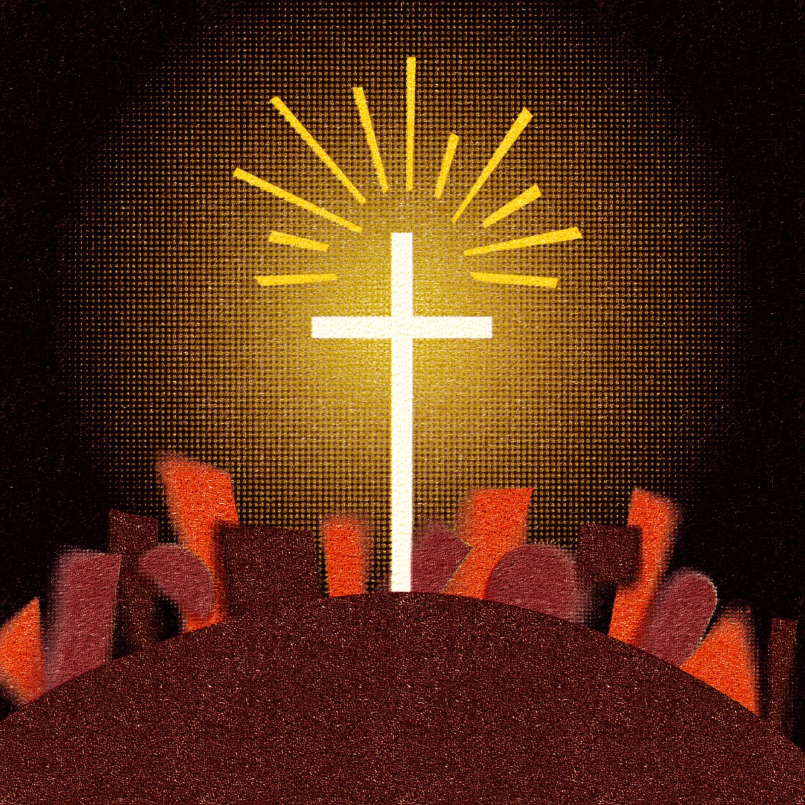

Sessão 15: Introdução aos PoderesSession 15: Introduction to the Powers
Principais LiçõesKey Takeaways
- Compreender o vocabulário e a cosmovisão do primeiro século de Paulo ajuda a ver o que ele quer dizer com "poderes espirituais".Understanding Paul's first-century vocabulary and worldview will help us see what he means by "spiritual powers."
"Os Poderes" nas Cartas de Paulo e na Bíblia Hebraica"The Powers" in Paul's Letters and the Hebrew Scriptures
"As pessoas modernas... tendem a assumir que os antigos concebiam os 'principados e potestades' e criam neles do mesmo modo que nós concebemos e cremos (ou deixamos de crer) neles. Pensamos que eles concebiam os poderes bastante literalmente como uma variedade de seres demoníacos invisíveis batendo asas no céu, ocasionalmente mirando algum morto azarado com sua carga maligna de doença, luxúria, possessão ou morte. Essa visão da visão deles encontra caminho até nas melhores traduções modernas da Bíblia, onde palavras como 'espiritual' e 'espíritos' são... tomadas como significando que entidades não-materiais estão envolvidas. Portanto, lemos relatos antigos de encontros com esses poderes, [alguns] só podem considerá-los alucinações, já que não têm referentes físicos 'reais'... Em suma, nossos olhos e mentes estão cativos de um modo de ver e pensar que só pode considerar demônios ou poderes angélicos ou como versões invisíveis de pessoas como nós, ou como fantasias semelhantes a dragões ou elfos... Um abismo foi fixado entre nós e os escritores bíblicos. Usamos as mesmas palavras, mas as projetamos em um mundo de significados totalmente diferente... Se nosso objetivo é entender a concepção do Novo Testamento sobre os Poderes... devemos em vez disso atender cuidadosamente ao vocabulário e conceitos únicos do primeiro século, para apreender o que queriam dizer com o vocabulário de 'poder' dentro de sua própria língua e cosmovisão. É uma virtude deixar de crer naquilo que não existe. Mas é perigoso e arrogante deixar de crer em algo simplesmente porque existe fora de nossas categorias atuais e limitadas." Adaptado de Wink, Walter (1984). Naming the Powers: The Language of Power in the New Testament. Fortress Press. 4."Modern people ... tend to assume that ancient people conceived of the 'principalities and powers' and believed in them in the same way that we conceive of and believe (or disbelieve) in them. We think they thought of the powers quite literally as a variety of invisible demonic beings flapping around in the sky, occasionally targeting some luckless mortal with their malignant payload of disease, lust, possession, or death. This view of their view finds its way into even the best modern translations of the Bible, where words like 'spiritual' and 'spirits' are ... taken to mean that non-material entities are involved. Therefore, we read ancient accounts of encounters with these powers, [some] can only regard them as hallucinations, since they have no 'real' physical referent ... In short, our eyes and minds are captive to a way of seeing and thinking that can only regard demons or angelic powers as either invisible versions of persons like ourselves, or as fantasies akin to dragons or elves ... A gulf has been fixed between us and the biblical writers. We use the same words, but project them into a wholly different world of meanings ... If our goal is to understand the New Testament's conception of the Powers ... we must instead attend carefully to the unique vocabulary and concepts of the first century, to grasp what they meant by the vocabulary of 'power' within their own language and worldview. It is a virtue to disbelieve in something that does not exist. But it is dangerous and arrogant to disbelieve in something simply because it exists outside our current, limited categories." Adapted from Wink, Walter (1984). Naming the Powers: The Language of Power in the New Testament. Fortress Press. 4.
Fluxo de Pensamento em Efésios 2:1-10Flow of Thought in Ephesians 2:1-10
Efésios 2:1-3: Em seu estado presente, à parte do sacrifício de Jesus, Paulo diz que a humanidade estava "morta em pecado".Ephesians 2:1-3: In their present state, apart from Jesus' sacrifice, Paul says that humanity was "dead in sin."
2:1: Isto está profundamente enraizado no entendimento de Paulo sobre a condição humana, descrito em Gênesis 1-4. Humanos são feitos para imagem de Deus ao mundo, mas quando se voltam para refletir apenas a si mesmos e seus desejos, cortam-se da fonte de toda a vida e se voltam para a morte. A afirmação de Gênesis 1-3 (Adão e Eva = humanidade e vida) é que todos os humanos fizeram a mesma escolha.2:1: This is deeply rooted in Paul's understanding of the human condition, described in Genesis 1-4. Humans are made to image God to the world, but when they turn away to reflect only themselves and their desires, they cut themselves off from the source of all life and turn toward death. The claim of Genesis 1-3 (Adam and Eve = humanity and life) is that all humans have made this same choice.
2:2: A realidade do mal na Terra não é somente de nossa própria feitura. Somos escravizados a forças espirituais das trevas da morte que contribuem para o mal no mundo. A desobediência humana desencadeia forças na criação que assumem vida e agência próprias.2:2: The reality of evil on Earth isn't only of our own making. We are enslaved to dark spiritual forces of death that contribute to evil in the world. Human disobedience unleashes forces into creation that take on a life and agency of their own.
Efésios 2:4-7: No exato ponto da pior e mais fraca incapacidade da humanidade, Deus mostrou rica misericórdia e amor de múltiplas formas.Ephesians 2:4-7: At precisely the point of humanity's worst and weakest inability, God showed rich mercy and love in multiple ways.
2:5: Fomos feitos "viventes juntamente com o Messias" porque nossa morte destinada foi revertida pela ressurreição do Messias, que se tornou a nossa própria.2:5: We were made "alive together with the Messiah" because our destined death was reversed by the Messiah's resurrection, which has become our own.
2:6: "Ele nos ressuscitou juntamente e nos assentou na região celeste no Messias Jesus." Em Efésios 1:20, "[o poder de Deus]... que ressuscitou o Messias dentre os mortos e o assentou à sua direita na região celeste." Nota: ser assentado à direita de Deus trata de receber o papel de verdadeiro poder pelo qual o mundo pode ser governado e conduzido pela vontade de Deus. Esta autoridade pertence a Jesus, e é dada como dom a seu povo. Não significa que os cristãos devam governar o mundo como tal. Antes, a verdadeira condução do mundo é o que acontece no dia a dia à medida que as pessoas se entregam em amor às necessidades dos outros.2:6: "He raised us together and seated us in the heavenly realm in the Messiah Jesus." In Ephesians 1:20, "[God's power] ... which raised the Messiah from the dead ones and seated him at his right hand in the heavenly realm." Note: Being seated at God's right hand is about being given the role of true power through which the world can be ruled and run by the will of God. This authority belongs to Jesus, and it is given as a gift to his people. It doesn't mean that Christians ought to be running the world as such. Rather, the real running of the world is what happens in day-to-day life as people give themselves in love to the needs of others.
2:7: O objetivo de Deus é que esta nova humanidade seja um emblema de sua graça e amor para a nova criação.2:7: God's goal is for this new humanity to be an emblem of his grace and love into the new creation.
Efésios 2:8-10: Todo este cenário é um dom da graça divina. A nova humanidade é uma nova criação no Messias, o que abre um caminho de vida inteiramente novo, cheio de oportunidades de amar e servir aos outros.Ephesians 2:8-10: This entire scenario is a gift of divine grace. The new humanity is a new creation in the Messiah, which opens up a whole new way of life full of opportunities to love and serve others.
Questões Interpretativas Chave em 2:1-10Key Interpretive Issues in 2:1-10
Em Efésios 2:2-3, "filhos da desobediência" é uma expressão hebraica onde "filho" significa "membro de um grupo" (os "filhos dos profetas", 2 Rs 2:7, 15). A frase seguinte, "por natureza, filhos da ira", é mais densa mas tem significado semelhante. A frase "filho de..." ou "filho de..." combinada com um verbo de punição negativa também é uma expressão hebraica. "Um filho de golpe" significa "aquele destinado a ser espancado" (Dt 25:2), e um "filho da morte" significa "aquele que deve ser morto" (1 Sm 26:16). Neste sentido, ser "por natureza" não remete a uma doutrina desenvolvida do pecado original; antes, desenvolve a imagem de Efésios 2:1, "estar morto". Quando você vive em estado de morte, por natureza está ligado a uma vida do mesmo tipo — da morte para produzir mais morte até morrer.In Ephesians 2:2-3, "sons of disobedience" is a Hebrew turn of phrase where "son" means "member of a group" (the "sons of the prophets," 2 Kgs. 2:7, 15). The following phrase, "by nature, children of wrath," is more dense but has a similar meaning. The phrase "son of ..." or "child of ..." combined with a verb of negative punishment is a Hebrew turn of phrase as well. "A son of striking" means "one destined to be beaten" (Deut. 25:2), and a "son of death" means "one who must be put to death" (1 Sam. 26:16). In this sense, to be "by nature" does not refer to a developed doctrine of original sin; rather, it is developing the image of Ephesians 2:1, "being dead." When you live in a state of death, you are by nature bound to a life of the same—from death to producing more death until one dies.
Em Efésios 2:3, "filhos da ira" não remete a uma predestinação dos eternamente condenados, mas a pessoas cujas ações corruptas as colocaram entre aqueles que enfrentarão a justiça divina.In Ephesians 2:3, "children of wrath" does not refer to a predestination of the eternally damned but to people whose corrupt actions have placed them among those who will face divine justice.
"Na Bíblia, a 'ira' de Deus, por sua vez, não representa a explosão intemperante de um caráter descontrolado. Antes, é a temperatura do amor de Deus, a manifestação de sua vontade e poder para resistir, para vencer, para queimar tudo o que contradiz seus conselhos de amor. Segundo Gl 3:13, a plena 'maldição' com que Deus ameaçou o transgressor foi derramada sobre Jesus sozinho, para que aqueles por ela ameaçados pudessem ser salvos. Maldição é infinitamente pior que ira." Barth, Markus (1974). Ephesians 1-3. Doubleday & Co. 231-232."In the Bible the 'wrath' of God, in turn, does not represent the intemperate outburst of an uncontrolled character. It is rather the temperature of God's love, the manifestation of his will and power to resist, to overcome, to burn away all that contradicts his counsels of love. According to Gal 3:13 the full 'curse' with which God threatened the trespasser was poured out upon Jesus alone so that those threatened by it might be saved. Curse is infinitely worse than wrath." Barth, Markus (1974). Ephesians 1-3. Doubleday & Co. 231-232.
"Paulo apressa-se a acrescentar no v. 3 que todos os cristãos, judeu ou gentio, outrora viveram segundo os desejos de 'nossa carne', com o que quer dizer realizar em ações suas inclinações pecaminosas. Assim, o 'nós', que claramente refere-se a judeus, éramos outrora 'filhos da ira por natureza como todos os demais'. Deve estar claro que Paulo não quer dizer que as pessoas estavam destinadas à ira, já que ele fala de si mesmo e, neste caso, de outros cristãos judeus. Ele quer dizer que estavam agindo de modo caído como aqueles que mereciam a ira de Deus." Witherington III, Ben (2007). The Letters to Philemon, the Colossians, and the Ephesians: A Socio-Rhetorical Commentary on the Captivity Epistles. Wm. B. Eerdmans Publishing Co. 253-254."Paul hastens to add in v. 3 that all Christians, Jew or Gentile, once lived according to the desires of 'our flesh,' by which he means carrying out in actions one's sinful inclinations. Thus 'we,' which clearly refers to Jews, were once 'children of wrath by nature like everyone else.' It should be clear that Paul does not mean that people were destined for wrath, since he is talking about himself and in this case other Jewish Christians. He means that they were acting in a fallen way like those who deserved God's wrath." Witherington III, Ben (2007). The Letters to Philemon, the Colossians, and the Ephesians: A Socio-Rhetorical Commentary on the Captivity Epistles. Wm. B. Eerdmans Publishing Co. 253-254.
Referindo-se a Efésios 2:8: "E isto não vem de vós." Ao que "isto" (τουτο) remete? (1) "Refere-se a 'vós sois salvos' ou, quase o mesmo, à declaração precedente envolvendo salvação pela graça mediante a fé, e esta salvação pela graça mediante a fé não tem sua fonte em vós mesmos. As palavras καὶ τοῦτο 'e isto' introduzem o primeiro de dois negativos que se equilibram (o segundo sendo 2:9) que reforçam a afirmação positiva de que fomos salvos pela graça mediante a fé. Adotar uma interpretação parentética para esta metade do versículo é destruir o paralelismo entre οὐκ ἐξ ὑμῶν 'não de vós mesmos' e οὐκ ἐξ ἔργων 'não de obras', ambos pertencentes ao mesmo fluxo de discurso. Nem essa interpretação destrói a ideia de que a fé é criada no indivíduo por Deus. Além de ser ensinado em outras passagens, está incluída nesta porque, sendo parte da salvação, ela também deve vir de Deus." Graham, Glenn H. (2008). An Exegetical Summary of Ephesians (2nd Edition). SIL International. 132.Referring to Ephesians 2:8: "And this is not from yourselves." To what does "this" (τουτο) refer? (1) "It refers to 'y'all are saved' or, much the same thing, to the whole preceding statement involving salvation by grace through faith, and this salvation by grace through faith does not take its source from within y'all'selves. The words καὶ τοῦτο 'and this' introduce the first of two balancing negatives (the second being 2:9) which enforce the positive statement that we have been saved by grace through faith. To adopt a parenthetical interpretation for this half of the verse is to destroy the parallelism between οὐκ ἐξ ὑμῶν 'not of y'all'selves' and οὐκ ἐξ ἔργων 'not of works' both of which belong to the same flow of discourse. Nor does this interpretation destroy the idea that faith is created in the individual by God. Besides being taught in other passages, it is included in this one because, being a part of salvation, it too must come from God." Graham, Glenn H. (2008). An Exegetical Summary of Ephesians (2nd Edition). SIL International. 132.

Pergunta de ReflexãoReflection Question
Em Efésios 2, Paulo deixa claro que toda a humanidade estava morta em suas transgressões e pecados e andava segundo "o príncipe da autoridade do ar" (Ef. 2:2). Em sua própria tradição ou vida, como você costumava entender a ideia dos poderes espirituais e sua influência?In Ephesians 2, Paul makes clear that all humanity was dead in their transgressions and sins and walked according to "the ruler of the authority of the air" (Eph. 2:2). In your own tradition or life, how have you typically understood the idea of spiritual powers and their influence?